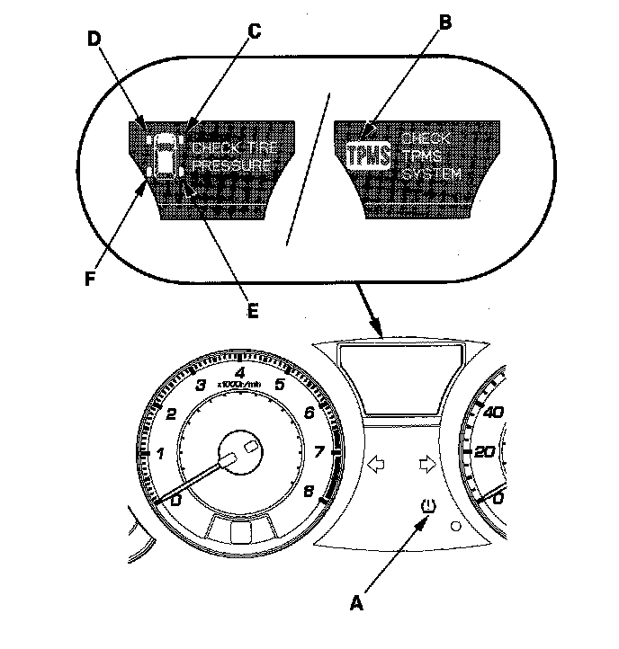

How TPMS Works

System Indicator Location
The system has six indicators.
- The low pressure indicator (A)
- The TPMS indicator (B)
- The right-front (RF) tire indicator (C)
- The left-front (LF) tire indicator (D)
- The right-rear (RR) tire indicator (E)
- The left-rear (LR) tire indicator (F)
How TPMS Works
The TPMS (tire pressure monitoring system) has six indicators: four tire indicators (on the multi-information display) a low pressure indicator (LED indicator) and a TPMS indicator (on the multi-information display). When the TPMS control unit detects low pressure in a tire, or a problem in the system, it turns on the appropriate indicator(s).
- If low tire pressure is detected, the low pressure indicator and the appropriate tire indicator(s) come on.
- If a problem in the system is detected, the TPMS indicator comes on.
- If low tire pressure and a problem in the system are detected, only the TPMS indicator comes on.
If the system is OK, the low pressure indicator should come on when you turn the ignition switch ON (II) and then go off 2 seconds later. If it doesn't, there is a problem with the system.
If the system detects low pressure in any of the four tires, the low pressure indicator and the appropriate tire indicator(s) will come on, and the control unit will set one or more of these codes:
DTC 11, 13, 15, 17. When the tire pressure returns to normal, the control unit will turn off the indicators and store the DTC(s). However, if the control unit detects a problem in the system during an indication of low tire pressure, it will turn off the low pressure indicator and tire indicators, store the DTC(s) and turn on the TPMS indicator.
NOTE: Tire pressures will increase slightly as the temperature in the tires rises during driving at highway speeds. Pressures will also increase or decrease slightly with changes in outside air temperature. A temperature change of about 18°F (10°C) will change tire pressure by about 10 kPa (0.1 kgf/cm2, 1.5 psi). If the temperature drops, tire pressure could decrease just enough to turn on the low pressure indicator and tire indicator(s) but later as tire temperature increases, the tire pressure could increase enough to turn them off. To resolve a complaint of such intermittent indications, confirm and clear the stored DTC(s) and check the tire pressures. Then explain to the customer how temperature changes can affect the system, especially when tire pressures are near the low end of the TPMS normal range - 168 to 220 kPa (1.7 to 2.2 kgf/cm2, 24 to 32 psi).
If a problem is detected in the system, most DTCs will cause the TPMS indicator to come on and stay on until the system returns to normal. If DTC 45, 61, 63, 65, 67, 81, 83, or 85 is set, the TPMS indicator will go off only when the ignition switch is turned off.
If a flat tire is replaced with the spare tire, and the flat tire is stored in the trunk area or the cabin, the low pressure indicator will stay on, but the appropriate tire indicator will go off. This prevents the client from thinking there is a problem with the spare tire. When the flat tire is taken out of the vehicle for repair, the TPMS indicator will come on (DTC 32, 34, 36, or 38) because the system is no longer receiving the signal from the tire's transmitter.